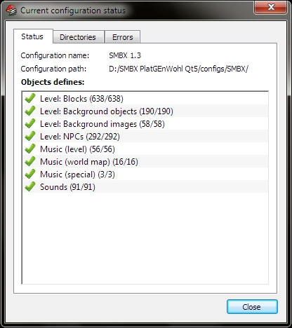
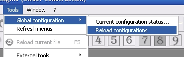

Configuration manager allow control and select the global game configurations.
This dialog allow to check states of current game config and find errors if they exists.
Configuration status window

This feature allows to reload global configuration settings without restarting of application. This useful for apply edited configs into the opened project.

You can work with other game configurations. To switch the game configutation you need open menu item: [Tools -> Global configuration -> Change configuration... ]. After switch of configuration you need to restart editor to start work with new configuration.
Copyright © 2014-2015 Platformer Game Engine by Wohlstand project. All rights reserved.